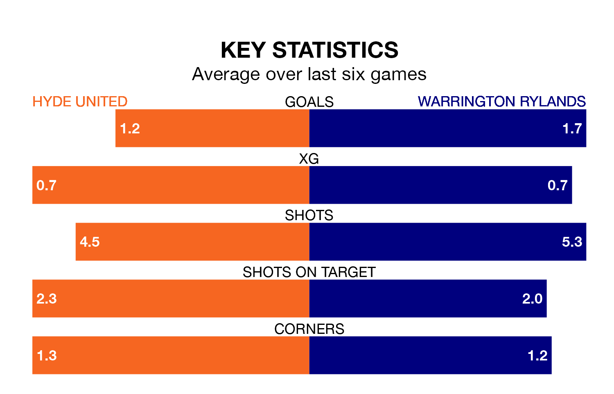

Two of the Northern Premier League's meanest defences go head-to-head at Ewen Fields on Saturday, when Warrington Rylands visit Hyde United.
No teams have conceded fewer goals than Warrington Rylands to date: the away side have let in just 36 goals in 32 games.
Hyde have conceded 38 goals in 35 games, giving them the fourth tightest back line so far this season.
Hyde are second in the table after 35 games, of which they have won 18 and drawn nine, earning 63 points.
Warrington Rylands are three places behind United in fifth, with 16 wins and 11 draws putting them on 59 points.
In the last five years, Hyde and Warrington Rylands have played each other on four occasions. They won two each.
On average, Hyde scored 2.0 goals and Warrington Rylands 1.0 in those matches.
Their last meeting was on October 21, when Warrington Rylands won 1-0 at home.
The hosts are in mixed form in the Northern Premier League, with two wins and three draws from their last six games.
With three wins and a draw over that period, the away side's form is slightly better – they have taken 10 points from 18, compared to Hyde's nine.
Hyde's last match was on March 16, a 1-1 draw against Ilkeston Town.
Warrington Rylands beat Bamber Bridge 2-0 last time out, also on March 16.
Updated: 10:19 (UTC), 22/03/24